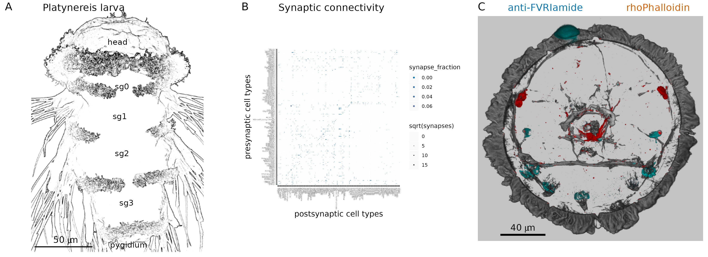
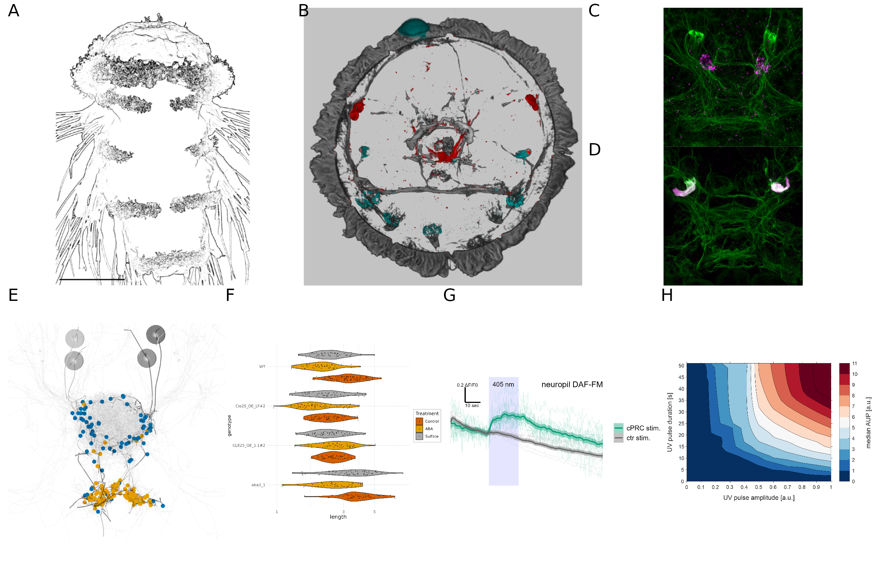

curl -LH "Accept: application/x-bibtex" https://doi.org/10.7554/eLife.91258.1 >> references.bibNew paper template
Author 11,2,* , Author 21,2, Author 33, Author 4E4
1Heidelberg University, Centre for Organismal Studies (COS), 69120 Heidelberg, Germany
2Affiliation 2
3Affiliation 3
4Affiliation 4
*Correspondence: xy@cos.uni-heidelberg.de
Abstract
This is an R Markdown document. Markdown is a simple formatting syntax for authoring HTML, PDF, and MS Word documents. For more details on using R Markdown see http://rmarkdown.rstudio.com.
text in bold italic underline
Introduction
You can add references either by referring to their id in the .bib file e.g., (1), or by switching to the visual editor (Cogwheel in the .Rmd menu -> Use Visual Editor). [(2)](2)(3)
It is now a test to edit the text and see how the changes show up on GitHub.
In the visual editor mode, go to ‘Insert’ -> @ Citation
You can select a Zotero library, PubMed, CrossRef etc. and insert the citations. (3)
The easiest way is to use the command line:
Platynereis dumerilii is a marine annelid… (4)
The references are stored in manuscript/references.bib (need to be defined in the Yaml header). This file will automatically updated when you insert a new reference through the Visual editor > Insert > Citations.
In this documents, references will be formatted in the style of eLife. This is defined in the Yaml header under: csl: elife.csl. The elife.csl file is saved in the /manuscript folder.
If you would like to use a different citation format, download the respective .csl file (e.g., from the Zotero style repository https://www.zotero.org/styles), save it in the /manuscript folder of the project and change the Yaml to csl: your_favourite_journal.csl.
Results
Inserting Figures
Test comment here.
You can add your figures into the rendered document. We saved the figures into /manuscript/figures or /manuscript/figure_supplements and can insert them from there. We use knitr::include_graphics for this. The title and legend can also be edited, as will as the width of the output figure.

(D)

(D)
Equations
Equations can also be inserted, Insert -> Display Math:
\[ \bar{X} = \frac{\sum_{i=1}^{n} x_{i}}{n} \]
Sourcing code and working with variable
The mean value of Nanog expression was 0.0909 indicating that Nanog is downregulated. The ‘analysis/scripts/statistics_for_paper.R’ script is sourced and it runs but the output is not included in the knitted output. But we can access the variables defined in the sourced script simply by adding ` r var_name ` between ` backticks, in this case max_PRC value is 21 (now this number comes from our sourced script).
If we update the data, the script can recalculate the variable we want to refer to in the text and update the number.
Acknowledgements
We would like to thank the Jekely lab for the R project template (https://github.com/JekelyLab/new_paper_template) we used to write this paper. This work was funded by …
Materials and Methods
You can insert tables from source data, such as .csv or Excel files and render them in html with the tinytable package.
Alternatively, you can use the Markdown grid table format. For more complex tables, you can use the tablesgenerator online grid table editor/converter (e.g. converts csv or excel files).
The output may differ between html and pdf, for most consistent results use the grid table format described here.
Key Resources Table
| Reagent type (species) or resource | Designation | Source or reference | Identifiers | Additional information |
|---|---|---|---|---|
| biological sample (N. vectensis) | larval, juvenile and adult N. vectensis | Specimens obtained form the Marine Invertebrate Culture Unit of the University of Exeter | N/A | NA |
| biological sample (cDNA) | cDNA obtained from N. vectensis | this study | N/A | RNA extracted with Trizol and cDNA synthesized with cDNA synthesis kit according to manufacturers recommendation |
| biological sample (peptide extract) | peptide extracts obtained from N. vectensis | this study | N/A | Peptides extracted from N. vectensis according to protocol explained in Material and Methods |
| genetic reagent (cDNA synthesis) | SuperScript™ III First-Strand Synthesis System | Invitrogen (from ThermoFisher) | 18080051 | NA |
| genetic reagent (Polymerase) | Q5® Hot Start High-Fidelity DNA Polymerase | New England Biolabs | M0493L | NA |
| genetic reagent (DNA assembly) | NEBuilder® HiFi DNA Assembly Master Mix | New England Biolabs | E2621L | NA |
| genetic reagent (restriction enzyme) | EcoRV restriction enzyme | New England Biolabs | R3195L | NA |
| genetic reagent (restriction enzyme) | Afl2 restriction enzyme | New England Biolabs | R0520L | NA |
| Col1 | Col2 | Col3 | Col4 | Col5 |
|---|---|---|---|---|
| a | b | c | d | e |
| d |
Complex grid table example
This table was generated by tt() as the output of an r chunk in a Quarto doc. For larger multi-page tables, this method gives correct page breaks in the pdf and html outputs. You can change the relative column widths with {tbl-colwidths=“[10,20,20,20,30]”} placed after the table caption declaration at the end.
| Reagent type (species) or resource | Designation | Source or reference | Identifiers | Additional information |
|---|---|---|---|---|
| biological sample (N. vectensis) | larval, juvenile and adult N. vectensis | Specimens obtained form the Marine Invertebrate Culture Unit of the University of Exeter | N/A | NA |
| biological sample (cDNA) | cDNA obtained from N. vectensis | this study | N/A | RNA extracted with Trizol and cDNA synthesized with cDNA synthesis kit according to manufacturers recommendation |
| biological sample (peptide extract) | peptide extracts obtained from N. vectensis | this study | N/A | Peptides extracted from N. vectensis according to protocol explained in Material and Methods |
| genetic reagent (cDNA synthesis) | SuperScript™ III First-Strand Synthesis System | Invitrogen (from ThermoFisher) | 18080051 | NA |
| genetic reagent (Polymerase) | Q5® Hot Start High-Fidelity DNA Polymerase | New England Biolabs | M0493L | NA |
| genetic reagent (DNA assembly) | NEBuilder® HiFi DNA Assembly Master Mix | New England Biolabs | E2621L | NA |
| genetic reagent (restriction enzyme) | EcoRV restriction enzyme | New England Biolabs | R3195L | NA |
| genetic reagent (restriction enzyme) | Afl2 restriction enzyme | New England Biolabs | R0520L | NA |
References
References
1.
M. Marinković, J. Berger, G. Jékely, Neuronal coordination of motile cilia in locomotion and feeding. Philosophical Transactions of the Royal Society B: Biological Sciences 375, 20190165 (2019).
2.
K. Jokura, N. Ueda, M. Gühmann, L. A. Yañez-Guerra, P. Słowiński, K. C. A. Wedgwood, G. Jékely, Nitric oxide feedback to ciliary photoreceptor cells gates a UV avoidance circuit. doi: 10.7554/elife.91258.1 (2023).
3.
E. A. K. Jacobs, S. Ryu, Larval zebrafish as a model for studying individual variability in translational neuroscience research. Frontiers in Behavioral Neuroscience 17 (2023).
4.
B. D. Ozpolat, N. Randel, E. A. Williams, L. A. Bezares-Calderón, G. Andreatta, G. Balavoine, P. Y. Bertucci, D. E. K. Ferrier, M. C. Gambi, E. Gazave, M. Handberg-Thorsager, J. Hardege, C. Hird, Y.-W. Hsieh, J. Hui, K. N. Mutemi, S. Q. Schneider, O. Simakov, H. M. Vergara, M. Vervoort, G. Jékely, K. Tessmar-Raible, F. Raible, D. Arendt, The Nereid on the rise: Platynereis as a model system. Zenodo, doi: 10.5281/ZENODO.4907400 (2021).